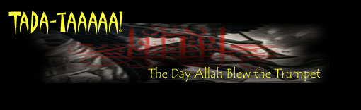
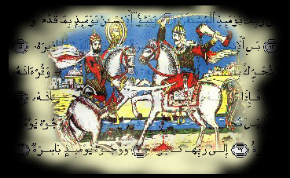

<html>


<!-- Mirrored from www.exitmundi.nl/Islam.htm by HTTrack Website Copier/3.x [XR&CO'2014], Mon, 28 Jun 2021 00:57:27 GMT -->
<!-- Added by HTTrack --><meta http-equiv="content-type" content="text/html;charset=UTF-8" /><!-- /Added by HTTrack -->
<head>
<meta http-equiv="Content-Type" content="text/html; charset=windows-1252">
<meta name="GENERATOR" content="Microsoft FrontPage 4.0">
<meta name="ProgId" content="FrontPage.Editor.Document">
<title>New Page 1</title>
</head>

<body bgcolor="#000000" text="#FFFFFF">

<p align="center"></p>
<blockquote>
  <blockquote>
    <p class="MsoNormal" style="line-height: 12.0pt; mso-hyphenate: none" align="center"><span lang="EN-US" style="letter-spacing:-.15pt"><font face="MS Sans Serif" size="4" color="#FF9900">Over
    the last few days, we've had earthquakes, and wars, and many freakish
    natural phenomena. But that's nothing, really. When you hear a trumpet
    sound, better say goodbye. Allah is about to wrap up the Universe he
    created.</font><o:p>
    &nbsp;
    </span></p>
  </blockquote>
    <p class="MsoNormal" style="text-align:justify;line-height:12.0pt;mso-hyphenate:
none"><span lang="EN-US" style="letter-spacing:-.15pt"><font face="MS Sans Serif"><div align="right">
    <table border="0" width="160" align="right" height="600" cellspacing="5" cellpadding="5">
      <tr>
        <td width="100%"><script type="text/javascript"><!--
google_ad_client = "pub-5046374505441754";
google_ad_width = 160;
google_ad_height = 600;
google_ad_format = "160x600_as";
google_ad_type = "text_image";
//2007-01-16: brede paal rood/grafit
google_ad_channel = "7001327099";
google_color_border = "000000";
google_color_bg = "F0F0F0";
google_color_link = "CC0000";
google_color_text = "000000";
google_color_url = "008000.html";
//--></script>
<script type="text/javascript"
  src="../pagead2.googlesyndication.com/pagead/f.txt">
</script></td>
      </tr>
    </table>
  </div>Oh,
    that good old Koran story about the end of days! The end of times as
    outlined in Muslim writings is one of the very finest religious apocalyptic
    scenario's around: rich in detail, vivid, and far reaching in religious
    implications. No wonder so many Muslims are deeply convinced judgment day
    (`Qiyamah', in Koran terminology) will come about one day.<o:p>
    </o:p>
    </font></span>
    <p class="MsoNormal" style="text-align:justify;line-height:12.0pt;mso-hyphenate:
none"><span lang="EN-US" style="letter-spacing:-.15pt"><font face="MS Sans Serif">So
    here's what will happen. The Koran discernes `minor' and `major' omens
    predicting the end of days. Many of the `minor' omens (there are 72 signs in
    total) are already here for everybody to be seen. Men will behave more like
    women and women will imitate men. Men will dress in silk. Children will be
    disobeyant, and youngsters will be role-models. People who used to be
    shepherds will build tall buildings.<o:p>
    </o:p>
    </font></span></p>
    <p class="MsoNormal" style="text-align:justify;line-height:12.0pt;mso-hyphenate:
none"><span lang="EN-US" style="letter-spacing:-.15pt"><font face="MS Sans Serif">And
    there's more. Many will engage in dangerous sports, divorces will be a daily
    occurrence and people will favour their friends over their families. Liquor
    will be consumed in the streets, and dancing and wild music will be
    everywhere. Religious leaders will make worldly profits, while intellectuals
    rather engage in science than in the study of religion. Also, there will be
    the usual apocalyptic rumble-a-bumble: earthquakes, devastating wars, storms
    and floods. If you add things up, it looks like the end of days is quite
    near, don't you think?<o:p>
    </o:p>
    </font></span></p>
    <p class="MsoNormal" style="text-align:justify;line-height:12.0pt;mso-hyphenate:
none"><span lang="EN-US" style="letter-spacing:-.15pt"><font face="MS Sans Serif"><font color="#FF9900">Well,
    don't worry -- yet.</font> When time's up, you can't miss it. For the signs will
    become more and more grotesque. One after another, they roll in like `a
    string of beads falling one after the other', as the prophet Muhammad put
    it.<o:p>
    </o:p>
    </font></span></p>
    <p class="MsoNormal" style="text-align:justify;line-height:12.0pt;mso-hyphenate:
none"><span lang="EN-US" style="letter-spacing:-.15pt"><font face="MS Sans Serif">As
    a first sign the countdown to doomsday is ending, nature displays some very
    odd phenomena. You'll notice red winds sweeping across the country. Some
    people find their face gets malformed -- hey, isn't that a pig's face?
    Others are even less fortunate: everywhere, people are suddenly swallowed
    into the ground.<o:p>
    </o:p>
    </font></span></p>
    <p class="MsoNormal" style="line-height: 12.0pt; mso-hyphenate: none" align="center"><span lang="EN-US" style="letter-spacing:-.15pt"><font face="MS Sans Serif">Then
    a cataclysmic religious war breaks out. It's Muslims versus Christians, and
    soon after the outbreak of war, half of the Christian armies sign a peace
    treaty with the Muslims. The Muslim-Christian coalition conquers Istanbul,
    while the `bad' Christians conquer Syria. But that all changes when the
    Christian army starts heading for Mecca. Suddenly, the ground cracks open
    and gone are the Christians.<o:p>
    </o:p>
    </font></span></p>
    <p class="MsoNormal" style="text-align:justify;line-height:12.0pt;mso-hyphenate:
none"><span lang="EN-US" style="letter-spacing:-.15pt"><font face="MS Sans Serif">Well,
    that doesn't mean war is over. The Muslims raid the Middle East, lose two
    thirds of their army but in the end win back Syria and Palestine.
    Immediately, they declare Holy War (Jihad) on India -- and win.</font></span><font face="MS Sans Serif" color="#FF9900" size="4"><span style="letter-spacing:-.15pt"><o:p></span></font><font face="MS Sans Serif"><span lang="EN-US" style="letter-spacing:-.15pt"></o:p>
    </span>
    </font></p>
    <p class="MsoNormal" style="text-align:justify;line-height:12.0pt;mso-hyphenate:
none"><span lang="EN-US" style="letter-spacing:-.15pt"><font face="MS Sans Serif">You
    find all this warfare a bit boring? Just wait, more miraculous things are
    about to happen. As peace settles down in the Muslim empire (that by now
    stretches from the Middle East deeply into Asia), the world is plagued by a
    severe drought that lasts three years.<o:p>
    </o:p>
    </font></span></p>
    <p class="MsoNormal" style="text-align:justify;line-height:12.0pt;mso-hyphenate:
none"><span lang="EN-US" style="letter-spacing:-.15pt"><font face="MS Sans Serif"><font color="#FF9900">After
    that, suddenly a very creepy character shows up.</font> Al-Dajjal is his name. And
    he actually is the Muslim anti-Christ. Well-educated Muslims will instantly
    recognise the guy: he is short, red-faced, has hair that sticks up and is
    blind at the right eye. The false prophet inspires vast amounts of followers
    anyhow: 70,000 heavily armed believers join the bad guy.<o:p>
    </o:p>
    </font></span></p>
    <p class="MsoNormal" style="text-align:justify;line-height:12.0pt;mso-hyphenate:
none"><span lang="EN-US" style="letter-spacing:-.15pt"><font face="MS Sans Serif">Gladly,
    in the meantime another chap comes to power: Al-Mahdi. Now Al-Mahdi is there
    to keep the balance between good and bad. He is a military leader, is named
    after the prophet and of course calls everyone to the true Islam as often as
    he can.<o:p>
    </o:p>
    </font></span></p>
    <p class="MsoNormal" style="text-align:justify;line-height:12.0pt;mso-hyphenate:
none"><span lang="EN-US" style="letter-spacing:-.15pt"><font face="MS Sans Serif">It
    takes a third miracle man to break down the stalemate between Al-Dajjal and
    Al-Mahdi: Jesus. Yes, you read that right: when the world is about to end,
    Muslims too expect Jesus -- `Isa' in the Koran -- to return from heaven. It
    is a miraculous thing to see, since Isa returns with much dramatic display:
    he descends from the sky in Damascus while a mass prayer is going on. If
    you're a Christian, you're in for a big surprise: without an eye's blink,
    Jesus denounces Christianity and calls upon everybody to convert to Islam.<o:p>
    </o:p>
    </font></span></p>
    <p class="MsoNormal" style="text-align:justify;line-height:12.0pt;mso-hyphenate:
none"><span lang="EN-US" style="letter-spacing:-.15pt"><font face="MS Sans Serif"><font color="#FF9900"><div align="left">
    <table border="0" width="160" align="left" height="600" cellspacing="5" cellpadding="5">
      <tr>
        <td width="100%"><script type="text/javascript"><!--
google_ad_client = "pub-5046374505441754";
google_ad_width = 160;
google_ad_height = 600;
google_ad_format = "160x600_as";
google_ad_type = "text_image";
//2007-01-16: brede paal rood/grafit
google_ad_channel = "7001327099";
google_color_border = "000000";
google_color_bg = "F0F0F0";
google_color_link = "CC0000";
google_color_text = "000000";
google_color_url = "008000.html";
//--></script>
<script type="text/javascript"
  src="../pagead2.googlesyndication.com/pagead/f.txt">
</script></td>
      </tr>
    </table>
  </div>And
    Jesus is in a fighting mood.</font> He turns out an excellent military leader, as
    he goes out to pick a fight with Al-Dajjal. While more and more people
    convert to Islam, Isa defeats the false prophet. Jesus kills Al-Dajjal
    himself. It happens in the valley of `Ifiq', near an Israeli airport.<o:p>
    </o:p>
    </font></span>
    <p class="MsoNormal" style="text-align:justify;line-height:12.0pt;mso-hyphenate:
none"><span lang="EN-US" style="letter-spacing:-.15pt"><font face="MS Sans Serif">After
    that, a brief period of peace sets in. Jihad stops, Islam rules, there's
    peace and prosperity everywhere and Isa himself retires, marries, has many
    children, dies after nineteen years and is buried next to Muhammad.<o:p>
    &nbsp;
    </font></span></p>
    <p class="MsoNormal" style="text-align:justify;line-height:12.0pt;mso-hyphenate:
none"><span lang="EN-US" style="letter-spacing:-.15pt"><font face="MS Sans Serif">But
    wait, it was still merely the beginning, a kind of warming-up for Allah. For
    the next moment, the real stuff begins. Prepare for the end of days!<o:p>
    </o:p>
    </font></span></p>
    <p class="MsoNormal" style="text-align:justify;line-height:12.0pt;mso-hyphenate:
none"><span lang="EN-US" style="letter-spacing:-.15pt"><font face="MS Sans Serif">In
    four countries, the ground suddenly caves in, leaving four enormous, gaping
    pits in the Earth's crust. Next, there's fog. For forty days, thick layers
    of smoke blanket the sky. If you were still a non-Muslim, you pass out.
    Muslims develop terrible colds.<o:p>
    </o:p>
    </font></span></p>
    <p class="MsoNormal" style="text-align:justify;line-height:12.0pt;mso-hyphenate:
none"><span lang="EN-US" style="letter-spacing:-.15pt"><font face="MS Sans Serif">Finally,
    the fog lifts up. You might expect to finally see the sun again. But to your
    amazement, it is completely dark. For three days and three nights, the Sun
    simply is not there. No wonder people all over the world start feeling a bit
    `restless' by now, as the Koran puts it.<o:p>
    </o:p>
    </font></span></p>
    <p class="MsoNormal" style="text-align:justify;line-height:12.0pt;mso-hyphenate:
none"><span lang="EN-US" style="letter-spacing:-.15pt"><font face="MS Sans Serif">Then,
    the Sun finally rises again. But wait, what's that? The Sun rises in the
    West, crossing the sky the wrong way around. By now, if you are still a
    non-believer, you might want to convert to Islam. But isn't that a pity:
    after the Sun-rising-in-the-West-incident, Allah won't listen to any more
    repentence.<o:p>
    </o:p>
    </font></span></p>
    <p class="MsoNormal" style="text-align:justify;line-height:12.0pt;mso-hyphenate:
none"><span lang="EN-US" style="letter-spacing:-.15pt"><font face="MS Sans Serif"><font color="#FF9900">It's
    one day later, and here comes the next miracle already.</font> Near Mecca, the
    ground starts to rumble, and the next moment, a giant beast lifts itself up
    out of the ground. Astonishingly, the beast can talk. It raises its claws,
    and look: the faces of the faithful begin to glitter, while the faces of the
    non-believers darken.<o:p>
    </o:p>
    </font></span></p>
    <p class="MsoNormal" style="text-align:justify;line-height:12.0pt;mso-hyphenate:
none"><span lang="EN-US" style="letter-spacing:-.15pt"><font face="MS Sans Serif">Not
    that a glowing face really helps you that much. The next moment, a breeze
    from the south comes in. It causes sores in the armpits of all Muslims. They
    suffer terribly and die. Only the non-believers remain. If you're one of
    them, you'll probably feel a bit nervous. It is perfectly clear that you
    have to witness the end of the world.<o:p>
    </o:p>
    </font></span></p>
    <p class="MsoNormal" style="text-align:justify;line-height:12.0pt;mso-hyphenate:
none"><span lang="EN-US" style="letter-spacing:-.15pt"><font face="MS Sans Serif">Allah
    indeed seems to have abandoned the world. Back in Mecca, the Kashba is
    destroyed by a troop of African invaders. The Koran is suddenly completely
    forgotten. In Yemen, a huge fire breaks out. If you are by chance a Yemenite
    and still surviving, you run for your life. But the fire follows you, all
    way to Syria. There the fire suddenly stops.<o:p>
    </o:p>
    </font></span></p>
    <p class="MsoNormal" style="text-align:justify;line-height:12.0pt;mso-hyphenate:
none"><span lang="EN-US" style="letter-spacing:-.15pt"><font face="MS Sans Serif">You
    wait for more to come. But nothing really happens. The silence lasts hours,
    then days, then months. Though you're bewildered and scared, you try to
    settle down, attempting to start a new life on your damned planet. You've
    had wars, monsters, fires and darkness, so how much worse can it really
    get?, you ask yourself retorically.<o:p>
    </o:p>
    </font></span></p>
    <p class="MsoNormal" style="text-align:justify;line-height:12.0pt;mso-hyphenate:
none"><span lang="EN-US" style="letter-spacing:-.15pt"><font face="MS Sans Serif"><font color="#FF9900">Well,
    it can.</font> After several years of tranquility, a eery and ominous sound
    echoes over the world. Although there are no Muslims left, some people might
    recognize it for what it is: the sound of the angel Israfil, blowing the
    doomsday trumpet of Allah. It's the last thing you'll ever hear. For the
    next moment, the entire universe with everyone in it simply ceases to exist.
    Zzzip, gone.&nbsp;</font></span></p>
    <p class="MsoNormal" style="line-height: 12.0pt; mso-hyphenate: none" align="left"><span lang="EN-US" style="letter-spacing:-.15pt"><font face="MS Sans Serif">Before
    you know what's happening, you find you're facing the big man himself. Allah
    is there, right in front of you. He is surrounded by angels and clouds.<o:p>
    </o:p>
    </font></span></p>
    <p class="MsoNormal" style="text-align:justify;line-height:12.0pt;mso-hyphenate:
none"><span lang="EN-US" style="letter-spacing:-.15pt"><font face="MS Sans Serif">Suddenly,
    you have a tremendous flashback on your life. You understand the
    consequences of everything you ever did. `Whoever has done an atom's weight
    of good will see it, and whoever has done an atom's weight of evil will also
    see it,' the Koran explains.<o:p>
    </o:p>
    </font></span></p>
    <p class="MsoNormal" style="text-align:justify;line-height:12.0pt;mso-hyphenate:
none"><span lang="EN-US" style="letter-spacing:-.15pt"><font face="MS Sans Serif"><font color="#FF9900">It's
    judgment time.</font> If there's too many grains of evil, off you go to hell. Or
    was there more good in your life? Then lucky you, you get to spend the rest
    of all eternity in the heavens of Allah, where everything looks about the
    same as on Earth -- but much, much better.<o:p></o:p>
    </font></span></p>
  <div align="right">
  <table border="0">
    <tr>
      <td><a href="mailto:mke@xs4all.nl"></a></td>
      <td><a href="intro2.html"></a></td>
    </tr>
  </table>
  </div>
</blockquote>
<div align="center">
    <center>
    <table border="0" width="728" height="90">
      <tr>
        <td width="100%"><script type="text/javascript"><!--
google_ad_client = "pub-5046374505441754";
google_ad_width = 728;
google_ad_height = 90;
google_ad_format = "728x90_as";
google_ad_type = "text_image";
//2007-01-16: kustblauw plat
google_ad_channel = "4730799746";
google_color_border = "336699";
google_color_bg = "FFFFFF";
google_color_link = "0000FF";
google_color_text = "000000";
google_color_url = "008000.html";
//--></script>
<script type="text/javascript"
  src="../pagead2.googlesyndication.com/pagead/f.txt">
</script></td>
      </tr>
    </table>
    </center>
  </div>

<p><!-- End Webstats4U code -->
</p>
<p align="center"><font size="2">All texts Copyright © Exit Mundi / AW Bruna
2000-2007.<br>
You're not allowed to copy, edit, publish, print or make public any material
from this website without written permission by Exit Mundi.</font></p>

<!-- Begin Nedstat Basic code -->
<!-- Title: Exit Mundi: Islam -->
<!-- URL: http://www.xs4all.nl/~mke/Islam.htm -->
<script language="JavaScript" type="text/javascript" src="../m1.nedstatbasic.net/basic.js">
</script>
<script language="JavaScript" type="text/javascript" >
<!--
  nedstatbasic("AC+9dwlTGCbx/FDcIZvBd8C3MJFQ", 0);
// -->
</script>
<noscript><!-- End Nedstat Basic code -->


<!-- Mirrored from www.exitmundi.nl/Islam.htm by HTTrack Website Copier/3.x [XR&CO'2014], Mon, 28 Jun 2021 00:57:30 GMT -->
</html>
